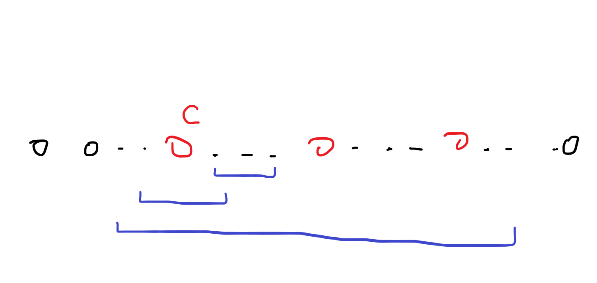

2024
Miller-Rabin 素性测试
引理1： 费马小定理
\(\forall p \in \mathbb P, 0 \le a \lt p, a^{p-1} \equiv 1 \pmod{p}\)
证明略。
引理2： 二次探测定理
\(\forall p \in \mathbb P, 0 \le x \lt p\)，方程 \(x ^ 2 \equiv 1 \pmod p\) 的解为 \(x \equiv \pm 1 \pmod p\)。
证明略。
设我们要检测的数为 \(n > 2\)。显然 \(n\) 为奇数，设 \(n - 1 = 2^s t\)，其中 \(t\) 为奇数。
若 \(n\) 为素数，我们希望 \(\forall a \in [1,n)\)，满足以下任意条件：
-
\(a^t \equiv 1 \pmod n\)。
-
\(\exists r \in [0,s), a ^ {2 ^ r t} \equiv -1 \pmod n\)。
证明
若以上两项都不满足，显然有 \(a^t \not \equiv 1 \pmod n\)，这时分两类讨论：
-
\(a ^ {n-1} \not \equiv 1 \pmod n\)，根据费马小定理，显然 \(n\) 不是素数。
-
\(a ^ {n-1} \equiv 1 \pmod n\)，又因为 \(\forall i \in [0,s), a ^ {2 ^ i t} \not \equiv -1 \pmod n\)，显然有 \(\exists i \in [0,s), a ^ {2 ^ i t} \not \equiv -1 \pmod n\) 且 \(a ^ {2 ^ {i + 1} t} \equiv 1 \pmod n\)。 即 \(\exists x \in [2,n-1), x ^ 2 \equiv 1 \pmod n\)，根据二次探测定理，\(n\) 不是素数。
当 \(n\) 为合数，若 \(a\) 仍满足上述两项之一，则称 \(a\) 为 \(n\) 的强伪证；若 \(a\) 不满足上述两项，则称 \(a\) 为 \(n\) 不是素数的凭证。
每个奇合数都有许多凭证，但是要找到他们不容易。于是考虑多随机几个 \(a\)，以验证 \(n\) 的素性。
code
1 2 3 4 5 6 7 8 9 10 11 12 13 14 15 16 17 18 19 | |
Pollard-Rho 算法
推导
对于一个已知的合数 \(n>3\)，我们的目标是快速找到它的一个非平凡因子（除 \(1\) 和 \(n\) 外）。
显然问题可以转化为找到一个 \(k\) 使得 \(1 \lt \gcd(k,n) \lt n\)。
考虑一个序列 \(f\)，满足 \(f_0=0\) 且 \(f_i = (f_{i-1}^2 + c) \bmod n\)，其中 \(c\) 是常数。由生日悖论1得 \(f\) 中不同的数量的期望为 \(O(\sqrt n)\)。
设 \(m\) 是 \(n\) 的最小质因子，显然有 \(m \le \sqrt n\)。
设 \(g_i = f_i \bmod m\)，则 \(g\) 中不同的数量的期望为 \(O(\sqrt m)\)。
于是我们可以在期望 \(O(\sqrt m) \le O(n ^ {\frac 1 4})\) 的时间内找到两个位置 \(i,j\) 使得 \(f_i \not = f_j \land g_i = g_j\)，即 \(n \nmid (f_i - f_j) \land m \mid (f_i - f_j)\)，于是有 \(1 \lt m \le \gcd(|f_i - f_j|, n) \lt n\)
于是我们可以在期望 \(O(n ^ {\frac 1 4})\) 的时间内找到 \(k\) 满足 \(1 \lt gcd(k,n) \lt n\)，也就找到了一个 \(n\) 的非平凡因子。
实现
我们随机 \(c \in [1,n)\)。
Floyd 判环
由于 \(f\) 的值域在 \([0,n)\) 之间，于是其必定有循环节，因为其值的排列图像形似 \(\rho\)，于是这个算法被称为 Pollard-Rho。
我们考虑枚举 \(i\)，判断是否 \(1 \lt \gcd(|f_i - f_{2i}|,n) \lt n\)，并在当 \(f_i = f_{2i}\) 时终止。
code
1 2 3 4 5 6 7 8 9 10 11 12 13 14 15 | |
倍增思想
考虑设两个变量 \(s,t\)，我们让 \(t\) 记下 \(s\) 的目前值，并让 \(s\) 跑一定距离，在这过程中检验 \(|s-t|\)，并每次都把距离翻倍，显然当 \(s\) 跑到 \(t\)，即出现环时，\(s\) 并没有多跑多远。
code
1 2 3 4 5 6 7 8 9 10 11 12 13 14 15 | |
基于倍增的二次优化
我们发现上面两种做法时间复杂度都不是单纯的 \(O(n ^ {\frac 1 4})\)，而是 \(O(n ^ {\frac 1 4} \log n)\)，因为还要调用 \(\gcd\)。
为了减小调用 \(gcd\) 的次数，我们考虑若 \(\gcd(a,b) \gt 1\)，显然也有 \(\gcd(ac \bmod b,b) \gt 1\)，于是我们把一段路程放到一起检验。
根据前人的智慧，取段长为 \(127\) 效果最好。
code
1 2 3 4 5 6 7 8 9 10 11 12 13 14 15 16 17 18 19 20 21 | |
完整代码
P4718 【模板】Pollard-Rho
1 2 3 4 5 6 7 8 9 10 11 12 13 14 15 16 17 18 19 20 21 22 23 24 25 26 27 28 29 30 31 32 33 34 35 36 37 38 39 40 41 42 43 44 45 46 47 48 49 50 51 52 53 54 55 56 57 58 59 60 61 62 63 64 65 66 67 68 69 70 71 72 73 74 75 76 77 78 79 80 81 82 83 84 85 86 87 88 | |
CF1267H Help BerLine
题意
已知有 \(n \le 8500\) 个基地，以及开启它们的顺序排列 \(p\)，初始所有基地都关闭。
求一个整数序列 \(f\) 使得在任意时刻，已开启的基地的 \(f\) 值按顺序排成的序列满足：
-
任意子段都有一个只出现在其中过一次的值（以下记为合法）
-
\(\forall i, f_i \in [1,24]\)
思考
发现 \(\lceil \log _{\frac 3 2} 8500 \rceil = 23\)，于是考虑缩小问题规模递归求解。
考虑用一种颜色 \(c\) 尽可能多且合法地填。
首先合法的必要条件显然是任意时刻序列中相邻的值都不同。
发现如果填 \(c\) 的位置在任意时刻都不相邻，且剩下的位置提取出来后任意时刻合法，那么必有当前序列任意时刻合法。
形式化地，设 \(S \subseteq \{1,2,\dots,n\}\) 为填 \(c\) 的位置集合，即 \(\forall i \in [1,n], f_i = c \iff i \in S\)。
那么如果任意时刻均有 \(\forall i,j \in S \land i \not = j, i,j\) 不相邻，便可递归解决剩下的位置集合 \(\{1,2,\dots,n\} \setminus S\)。
感性理解：对于任意时刻，显然任意值为 \(c\) 的位置不相邻，那么便如下图：

显然任意子段都属于上面三种之一，且都合法。
解法
于是我们便可以尽可能地在满足任意时刻填 \(c\) 的位置都不相邻的前提下，填尽可能多的 \(c\)。
于是问题就简单了，任意时刻填 \(c\) 的位置都不相邻可以转化为当它刚好被加入序列的时刻它的前驱后继都不为 \(c\)，于是从后往前扫一遍就可以了。
且显然有一个点填 \(c\) 最多使得两个点无法填 \(c\)，于是可以把问题规模减小 \(\lceil \frac n 3 \rceil\)，可以通过本题。
1 2 3 4 5 6 7 8 9 10 11 12 13 14 15 16 17 18 19 20 21 22 23 24 25 26 27 28 29 30 31 32 33 34 35 | |
补充
这个做法十分的不直观，因为考虑 \(p = \{1,2,3,4\}\)，若 \(f = \{1,2,1,2\}\)，虽然符合任意时刻相邻两个都不相同，但却是非法的。
这是因为当我们把 \(\{1,3\}\) 两个位置的 \(f\) 标为 \(1\) 时，缩小了问题规模，删除了他们，这时 \(p = \{2,4\}\)，因此 \(2\) 与 \(4\) 相邻，我们就不能使 \(f = \{2,2\}\)，而是 \(f = \{3,2\}\)，合并得到 \(f = \{1,3,1,2\}\)。
FFT & NTT 复习笔记
默认文中的形如 \([l,r)\) 的区间为其与整数集的交集。
快速变换
设原多项式为 \(F(x) = \sum_{i \in [0,n)} a_i x ^ i\)，其中 \(n = 2 ^ k, k \in \mathbb Z ^ +\)。
我们要求 \(\forall i \in [0,n),\hat a_i = F(t_i)\)，其中 \(t\) 是一个长度为 \(n\) 且两两互不相同的序列。
显然 \(F\) 可以被一组 \(\hat a,t\) 唯一确定，即点值表示法。
另设两个多项式
\[
G_0(x)=a_0 + a_2 x + \dots + a_{n - 2} x^{\frac n 2 - 1} \\
G_1(x)=a_1 + a_3 x + \dots + a_{n - 1} x^{\frac n 2 - 1} \\
\]
则有
\[
\begin{aligned}
F(x) & = \sum_{i \in [0,n)} a_i x ^ i \\
& = a_0 + a_1 x + a_2 x^2 + \dots + a_{n-1} x^{n-1} \\
& = (a_0 + a_2 x^2 + \dots + a_{n-2} x^{n-2}) + (a_1 x + a_3 x^3 + \dots + a_{n-1} x^{n-1}) \\
& = G_0 (x ^ 2) + x G_1 (x ^ 2) \\
\end{aligned}
\]
考虑构造单位根 \(\omega _n ^k\) 满足 \(\omega _n ^{\frac n 2} = -1, \omega _{2n} ^ {2k} = \omega _n ^k\)。
显然也有 \(\omega _n ^n = \omega _n ^0 = 1\)。
设 \(\forall i \in [0,n), t_i = \omega _n ^i\)。
当 \(x = \omega _n ^k, k \in [0,\frac n 2)\) 时显然有
\[
\begin{aligned}
F(\omega _n ^k) & = G_0(\omega _n ^{2k}) + \omega _n ^k G_1(\omega _n ^{2k}) \\
& = G_0(\omega _ {\frac n 2} ^ k) + \omega _n ^k G_1(\omega _{\frac n 2} ^k) \\
\end{aligned}
\]
当 \(x = \omega _n ^{k + \frac n 2}, k \in [0,\frac n 2)\) 时有
\[
\begin{aligned}
F(\omega _n ^{k + \frac n 2}) & = G_0(\omega _n ^{2k + n}) + \omega _n ^{k + \frac n 2} G_1(\omega _n ^{2k + n}) \\
& = G_0(\omega _n ^{2k} \cdot \omega _n ^n) - \omega _n ^k G_1(\omega _n ^{2k} \cdot \omega _n ^n) \\
& = G_0(\omega _n ^{2k}) - \omega _n ^k G_1(\omega _n ^{2k}) \\
& = G_0(\omega _{\frac n 2} ^k) - \omega _n ^k G_1(\omega _{\frac n 2} ^k) \\
\end{aligned}
\]
由于两者只有一个符号的差异，于是 \(F\) 的点值可以直接 \(\mathrm O(n)\) 从 \(G_0, G_1\) 的点值得到。
递归解决，时间复杂度 \(\mathrm O(n \log n)\)。
逆变换
设变换后的点值序列为 \(\hat a\)，即
\[
\begin{aligned}
\forall i \in [0,n), \hat a_i & = F(\omega _n ^i) \\
& = \sum _{j \in [0,n)} a_j (\omega _n ^i)^j \\
& = \sum _{j \in [0,n)} a_j \omega _n ^{ij} \\
\end{aligned}
\]
设多项式 \(\hat F(x) = \sum _{i \in [0,n)} \hat a_i x^i\)。
对 \(\hat F\) 进行点值变换（\(\forall i \in [0,n),t_i = \omega _n ^{-i}\)），设点值序列为 \(s\)。
则有
\[
\begin{aligned}
\forall i \in [0,n), s_i & = \hat F(\omega _n ^{-i}) \\
& = \sum _{j \in [0,n)} \hat a_j (\omega _n ^{-i}) ^j \\
& = \sum _{j \in [0,n)} \omega _n ^{-ij} \hat a_j \\
& = \sum _{j \in [0,n)} \omega _n ^{-ij} \sum _{k \in [0,n)} a_k \omega _n ^{jk} \\
& = \sum _{j \in [0,n), k \in [0,n)} \omega _n ^{-ij} a_k \omega _n ^{jk} \\
& = \sum _{j \in [0,n), k \in [0,n)} \omega _n ^{j(k-i)} a_k \\
& = \sum _{k \in [0,n)} a_k \sum _{j \in [0,n)} \omega _n ^{j(k-i)} \\
& = \sum _{k \in [0,n)} a_k \sum _{j \in [0,n)} (\omega _n ^{k-i}) ^j \\
\end{aligned}
\]
显然第二个求和是一个等比数列，由等比数列求和公式 \(\sum _{i \in [m,n)} p^i = \frac {p^m - p^n} {1 - p}\) 得：
- 当 \(\omega _n ^{k-i} \not = 1 \iff i \not = k\)
\[
\begin{aligned}
\sum _{j \in [0,n)} (\omega _n ^{k-i}) ^j & = \frac {1 - \omega _n ^{(k-i) n}} {1 - \omega _n ^{k-i}} \\
& = \frac {1 - (\omega _n ^{k-i}) ^n} {1 - \omega _n ^{k-i}} \\
& = \frac {1 - 1} {1 - \omega _n ^{k-i}} \\
& = 0
\end{aligned}
\]
- 当 \(\omega _n ^{k-i} = 1 \iff i = k\)
\[
\sum _{j \in [0,n)} (\omega _n ^{k-i}) ^j = \sum _{j \in [0,n)} 1 = n
\]
因此
\[
\begin{aligned}
\forall i \in [0,n), s_i & = \sum _{k \in [0,n)} a_k \sum _{j \in [0,n)} (\omega _n ^{k-i}) ^j \\
& = n a_i \\
\end{aligned}
\]
于是我们有
\[
\forall i \in [0,n), a_i = \frac {s_i} n
\]
构造单位根
- FFT
在复数域下，有 \(\omega _n = \cos \frac {2 \pi} n + \mathrm i \sin \frac {2 \pi} {n}\)。
其中 \(\mathrm i = \sqrt {-1}\) 是 虚数单位，可以用 C++ 中的 complex 库中的 std::complex<double/long double> 存储复数。
- NTT
对于模数 \(P \in \mathbb P, \exists n,k \in \mathbb Z^+, P=2^nk+1\)，在模 \(P\) 意义下有 \(\omega _n \equiv g ^ {\frac {P-1} n}\)，其中 \(g\) 是原根。
\(g\) 是模 \(P\) 意义下的原根当且仅当 \(g ^i \not \equiv 1 \pmod P,\forall i \in [1,\phi(P))\) 且 \(g ^{\phi(P)} \equiv 1 \pmod P\)。
specially，\(\forall P \in \mathbb P\)，其原根 \(g\) 满足 \(\forall i \in [1,P-1), g ^i \not \equiv 1 \pmod P\) 且 \(g^{P-1} \equiv 1 \pmod P\)。
于是对 \(n = 2 ^m, m \in \mathbb Z ^+\)，我们有 \(\omega _n ^n \equiv g ^{\frac {P - 1} {n} \cdot n} \equiv g ^{P - 1} \equiv 1, \pmod P\)，且 \(\omega _n ^{\frac n 2} \equiv g ^{\frac {P - 1} 2} \equiv \pm \sqrt {g ^ {P - 1}} \equiv \pm 1 \pmod P\)，又 \(g ^ {\frac {P-1} 2} \not \equiv 1 \pmod P\)，所以 \(\omega _n ^{\frac n 2} \equiv -1 \pmod P\)。
还有 \(\omega _{2n} ^{2k} \equiv g ^{\frac {2k(P-1)} {2n}} \equiv g ^{\frac{k(P-1)} n} \equiv \omega _n ^k \pmod P\)
由于原根的特殊性，模数 \(P \in \mathbb P\) 有特殊的限制，一般有 \(P = k 2 ^m + 1, k,m\in \mathbb Z ^+\)。
常见的模数有
\[
\begin{aligned}
167772161 = 5 \times 2 ^{25} + 1, g = 3 \\
469762049 = 7 \times 2 ^{26} + 1, g = 3 \\
754974721 = 45 \times 2 ^{24} + 1, g = 11 \\
998244353 = 119 \times 2 ^{23} + 1, g = 3 \\
1004535809 = 479 \times 2 ^{21} + 1, g = 3 \\
\end{aligned}
\]